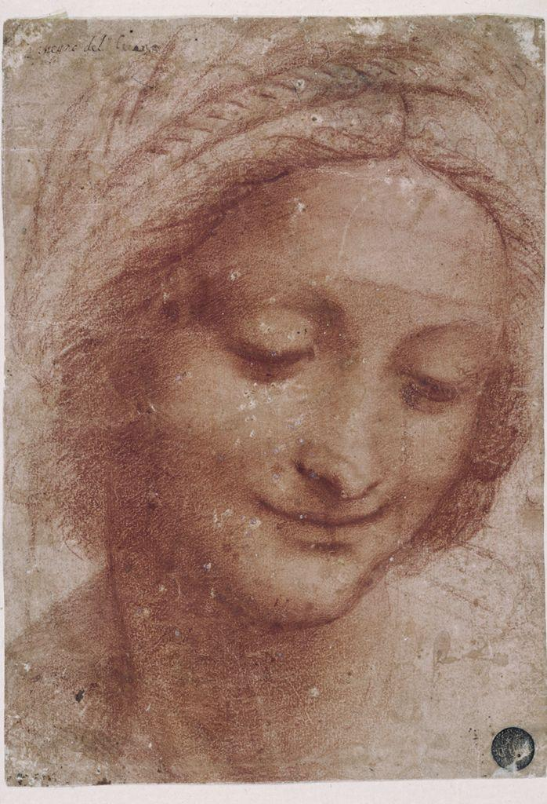

Before we name anything, just look. Spend a full minute with the drawing below. Follow the pen lines down the hillside and out toward the far valley.

{kind=link}
Leonardo da Vinci made this drawing when he was about twenty-one years old, and he wrote the date right in the corner: 5 August 1473. It is often called the earliest known dated drawing by Leonardo, and one of the first in Western art to take pure landscape as its only subject. No saints, no portrait, no story. Just rock, water, trees, and air. Notice how the near rocks are dark and busy with quick strokes, while the far valley fades to thin, pale lines that almost dissolve into the page.
Every one of those answers can be defended from the drawing. The point is that Leonardo guided your eye on purpose, mostly by controlling one thing: how light or dark each mark is. That tool is called value. Now learn to use it.
Value is how light or dark something is. It is the element that lets a flat surface pretend to have light, shadow, and roundness. A value scale is a stepped range from the lightest light to the darkest dark. Training your eye to see those steps is the whole game.
A 7-step value scale, lightest to darkest. You will build your own in the Week 1 sketch.
How value builds a solid form
Imagine light falling on a ball from one direction. The light source decides everything. The spot facing the light is the brightest highlight. As the surface curves away, value steps through the midtones into the darkest core shadow. The ball then throws a cast shadow onto the ground. Naming these zones is how an artist turns a flat circle into a believable sphere.
Three value zones do most of that work. Learn to name them and you can shade any rounded object.
Chiaroscuro: modeling form with light and dark
When Renaissance artists used careful value to make objects look round and solid, they were practicing chiaroscuro. The word is Italian for "light-dark." It names the technique of modeling a form by moving smoothly across a value range, from lit highlight to deep shadow. Chiaroscuro is one of the great achievements of Renaissance art, and Leonardo pushed it further than almost anyone before him.

Look how Leonardo turns the cheek, brow, and neck from light into shadow with no hard outline anywhere. That soft, gradual value change is chiaroscuro at work, and it is why the head reads as a solid form rather than a flat drawing.
Sfumato: Leonardo's smoky edges
Leonardo added a signature touch. Instead of drawing a hard outline where light meets shadow, he blended the two so softly that the edge seems to disappear, like smoke. He called this sfumato, from the Italian word for "smoke." It is most famous in the soft corners of the eyes and mouth in the Mona Lisa, where you can never quite find the line. Sfumato makes value transitions feel like real air and real skin.
Value also builds distance: atmospheric depth
Look again at the Arno valley. The far hills are pale and soft. The near rocks are dark and sharp. This is atmospheric perspective: because air and haze sit between you and faraway things, distant objects look lighter and less detailed, while near objects look darker and crisper. You can fake real distance on flat paper just by controlling value.
Artists and critics look at art in a deliberate order, so that judgment is earned and not just blurted. The four steps spell DAIJ: Describe, Analyze, Interpret, Judge. Watch it applied to Leonardo's Landscape drawing of the Arno Valley. You will use the same steps in your VR critique this week.
Describe (just the facts)
A wide river valley. On one side, a steep crag of rock with a small fortified building on top. Below, rolling fields and a flat plain stretch toward distant hills. Quick pen lines cover the whole sheet, with a handwritten date in the upper area.
Analyze (how is it built?)
The near rocks carry the darkest, densest value and the busiest lines. The far valley is built from thin, pale, widely spaced strokes, so it reads as lighter and softer. That shift from dark and detailed to light and simple is atmospheric perspective doing its work.
Interpret (what is it saying?)
The drawing feels like a study of looking itself. Leonardo seems less interested in telling a story than in capturing how air, distance, and light actually behave. It reads as the work of someone training his eye on nature.
Judge (does it succeed?)
It succeeds, and historically it mattered. With pen and ink alone, Leonardo created real depth and air, and he treated landscape as worth drawing for its own sake, which was a new idea. That same control of value is what you will practice this cycle.
▶ Try it in your notebook: name where Leonardo places his DARKEST values, then reveal a check.
Value is how light or dark a thing is, and it is the workhorse of realistic art. Control it well and a flat circle becomes a solid ball, and a flat page opens into a deep valley. Leonardo did it with pen and ink. This cycle, with black, white, and gray, so will you.